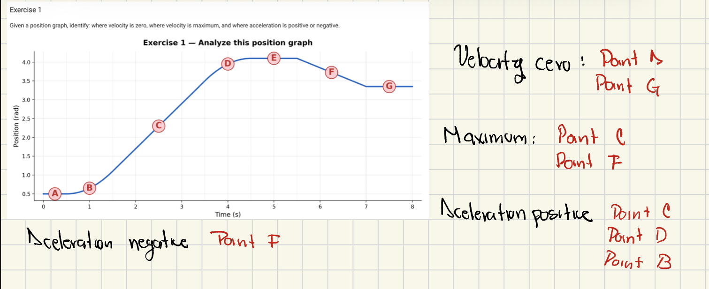
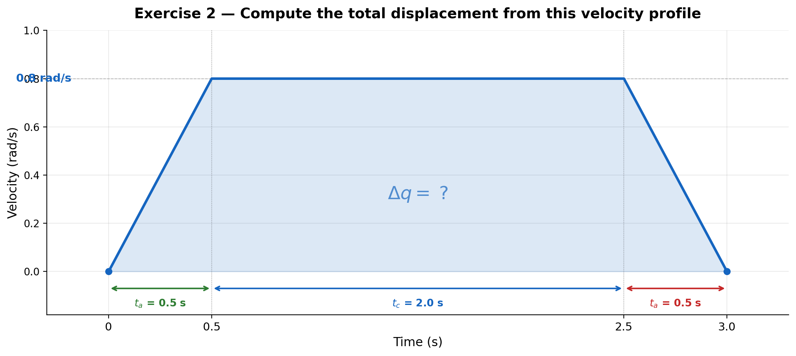
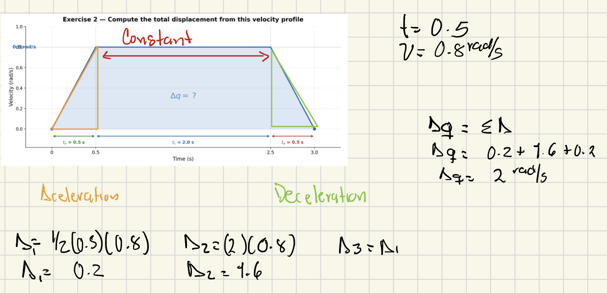
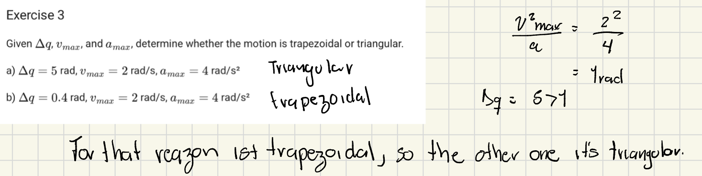
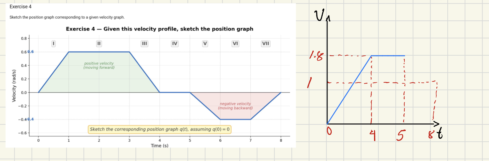
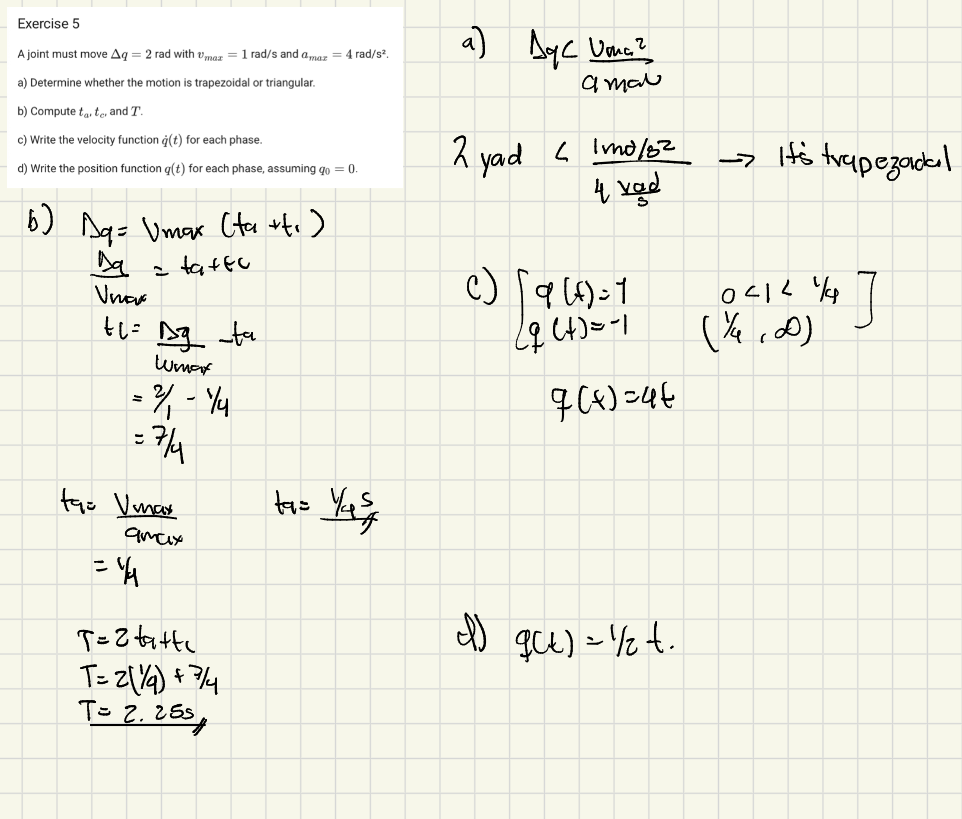
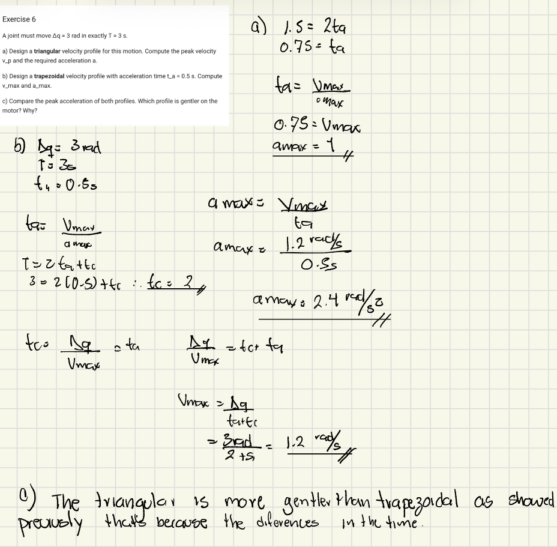

Exercise 1
Given a position graph, identify: where velocity is zero, where velocity is maximum, and where acceleration is positive or negative.

Solution

Exercise 2
Given a trapezoidal velocity graph, compute total displacement from the area under the curve.

Solution

Exercise 3
Given Δq, vmax , and amax, determine whether the motion is trapezoidal or triangular.
a) Δq = 5rad, vmax = 2rad/s, amax = 4rad/s²
b) Δq = 0.4rad, vmax = 2rad/s, amax = 4rad/s²
Solution

Exercise 4
Sketch the position graph corresponding to a given velocity graph.

Solution

Exercise 5
A joint must move Δq = 2 rad, with vmax = 1 rad/s and amax = 4 rad/s².
- Motion type: Determine whether the motion is trapezoidal or triangular.
- Time parameters: Compute ta, tc, and T.
- Velocity function: Write the velocity function q(t) for each phase.
- Position function: Write the position function q(t) for each phase, assuming q0 = 0.
Solution

Exercise 6
A joint must move Δq = 3 rad in exactly T = 3 s.
a) Triangular velocity profile
Design a triangular velocity profile for this motion. Compute the peak velocity vp and the required acceleration a.
b) Trapezoidal velocity profile
Design a trapezoidal velocity profile with acceleration time ta = 0.5 s. Compute vmax and amax.
c) Comparison
Compare the peak acceleration of both profiles. Which profile is gentler on the motor? Why?
Solution
